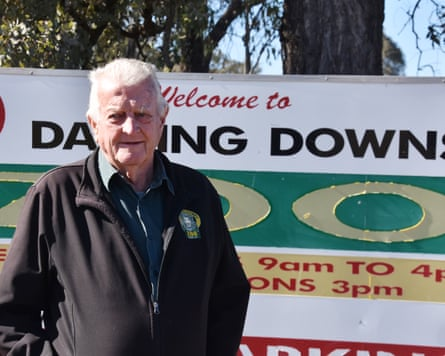
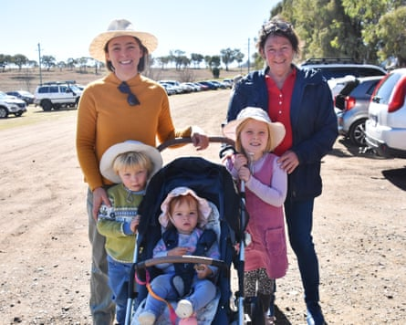

A Queensland zoo under investigation after a lion attack has reopened its doors, two days after the owner’s sister-in-law lost her arm.
The woman, in her 50s, remains in hospital in a stable condition after the attack, which took place on Sunday morning at Darling Downs zoo south of Toowoomba.
The owner, Steve Robinson, updated media outside the zoo on Tuesday morning. He said the attack had taken place at a holding enclosure, in an area where only trained staff were permitted to go, just moments after others had finished cleaning the main enclosure.
Robinson said the zoo used “protected contact”, which means nobody enters an enclosure with an adult lion.
- Sign up for Guardian Australia’s breaking news email
He revealed that the victim was his sister-in-law, a schoolteacher from New South Wales who regularly travels to Toowoomba with her family on holidays. Robinson’s wife and a carnivore keeper were nearby and Robinson credited a second keeper, well trained in first aid, with saving his sister-in-law’s life.
“She actually took my wife’s leather belt off and applied a tourniquet,” she said. “Very quickly, the first aid kit was there, we wrapped her up in a thermal blanket and the paramedics locally were here very, very quickly indeed.”
Robinson said only staff were permitted in the area, which is known as the “keeper’s area”.
Steve Robinson, owner of the Darling Downs Zoo.Photograph: Andrew Messenger/The Guardian
Asked why the woman was in a restricted area, Robinson said keepers were careful about who they let into back areas and she had been allowed in for 20 years. The zoo has never had an attack before, he said.
Robinson said his sister-in-law often took photos to produce calendars for the zoo.
He told media “there’s no aggression and no nastiness” in the animals and it was believed the lioness was just playing.
“We’ve raised these lions ourselves,” he said. “Their temperaments are excellent. We can still interact with them through the mesh of the cage.”
He said it was hard to tell what had happened because nobody saw the attack. “There were people working very, very close nearby, but it was all over in a split second,” he said. “It was that quick that we could only surmise at this stage.
“The lady in question is currently in surgery right now again, and she has been in no condition to be interviewed fully about what happened.”
Workplace Health and Safety Queensland is investigating.
The woman would undergo surgery again on Tuesday, Robinson said.
“Emotionally, both her and my wife are on a rollercoaster,” he said. “It’s the great unknown at the moment, we just don’t know, ultimately, what’s going to be involved and where we’re going to end with this.”
Dozens of people went through the gates at Darling Downs zoo after it reopened at 9am on Tuesday. Some visitors said the animals were curious about a news helicopter hovering in the distance but otherwise there were no signs of the weekend tragedy, with the mood among the staff and guests overwhelmingly happy.
The lions remained on display but paid encounters would not be offered this week for the sake of the keepers, Robinson said.
Robinson said some had brought boxes of chocolates and cookies to keep their spirits up.
Several visitors said they had come as a result of the media attention on the zoo, some because they wanted to show their support.
Bec Bidstrup said she had travelled from Condamine, about four hours away, to visit the zoo with her children, only to find it closed.
Bec Bidstrup with Wynn, Poppy and Evie Bidstrup, from Condamine, and Sue Mickel, from Toowoomba.Photograph: Andrew Messenger/The Guardian
“We were actually on our way here on Sunday and heard the news on the way,” she said. “So we just stayed an extra couple of days and waited until it was open again.”
“I guess … a bit of media attention is good for business,” Bidstrup said.
Another visitor, Jenny Ridder said she wasn’t worried about safety because the zoo had an otherwise spotless record and the animals were behind fences.
The zoo turned 20 last month. It has nine lions and four lion keepers.